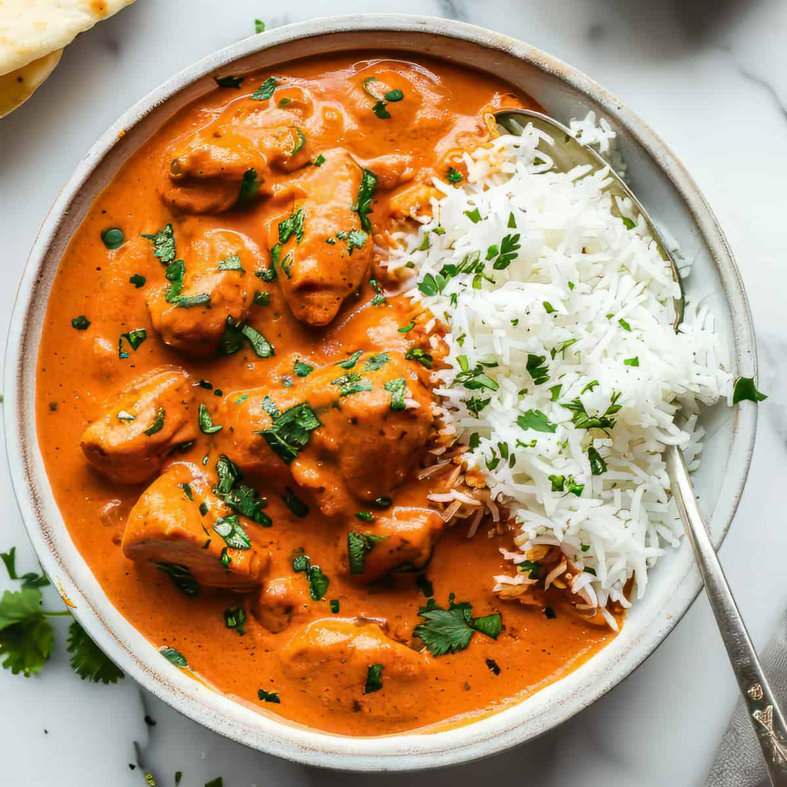

Butter_chicken Recipes

Description
Butter chicken, is a popular Indian dish made with tender chicken cooked in a creamy tomato sauce. It features a blend of butter, cream, and spices like garam masala, giving it a rich, mildly spiced flavor. Often served with naan or rice, it’s a comforting and flavorful meal.
Ingredients
- Boneless Chicken
- Onion
- tomato
- Butter
- Yogurt
- Lemon juice
- Ginger Garlic paste
- Spices
- Heavy cream
- Salt
Steps
- Marinate chicken with yogurt, ginger, garlic, lemon juice, and spices for 30 minutes to 2 hours.
- Cook the marinated chicken in a pan until browned and cooked through.
- Saute onions in butter until golden,then add ginger and garlic paste.
- Add purees tomatoes and cook until the sauce thickens.
- Stir in cream,garam masala,kasuri methi and salt.
- Combine cooked chicken with the sauce and simmer until its well cooked
Home